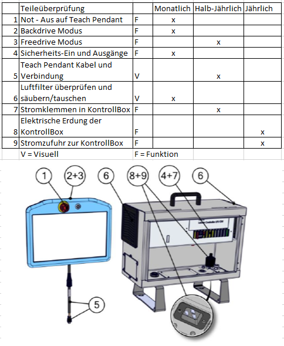
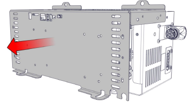
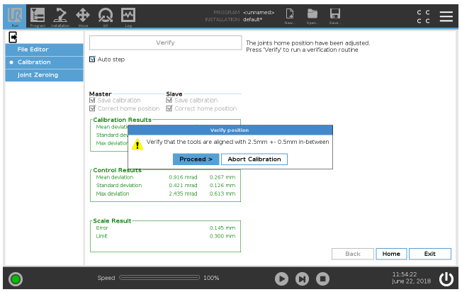

Willkommen zur ZF-Robotik
Bitte vorher die Schulung auf der Universal-Robot Webseite machen.
Grundlagen:
Programmierer:
Experte:
Sicherheit:
Instandhaltung:
Frage
...?
Rotationsmatrix
Die Rotation eines Körpers im Raum ist ein essentielles Thema für Ingenieure in jeglichen Bereichen. Auch auf Enzyklopedien gibt es einiges über dieses Thema heraus zu finden (Euler, Drehmatrix).
Die wissenschaftliche Theorie, die man über dieses Thema nachlesen kann, ist grenzenlos. Aber um wirklich zu verstehen was passiert, braucht man eine visuelle Veranschaulichung, damit man seine Denkweise daran anpasst.
ZYX-Konvention
Die Rotationsmatrix besteht aus 3 einzelnen Matrizen, die jeweils für Z-Rotation, Y-Rotation und X-Rotation stehen.
Multipliziert man diese Matrizen miteinander, ergibt sich die finale Rotationsmatrix.
Für den Startbildschirm, bitte Klicken.
Rechte Hand Regel
Die rechte Hand ist, wie in vielen anderen Bereichen der Technik, auch hier ein gutes Werkzeug um Koordinatensysteme schnell zu veranschaulichen.
Daumen - X-Achse
Zeigefinger - Y-Achse
Mittelfinger - Z-Achse
Drehsinn
Für den Drehsinn benutzt man auch die rechte Hand, genau wie in der Elektrotechnik. Der Daumen zeigt in Richtung des Vektors und die Richtung der anderen Finger gibt die positive Drehrichtung vor.

Für den Startbildschirm, bitte Klicken.
Koordiantensystem
In der Robotik gibt es einige Koordiantensysteme, die man berücksichtigen muss. Es gibt den Bezug zur Basis, zum TCP oder auch zu einer selbst definierten Ebene.
Diese Abhängigkeiten sollte man für jeden Fahrbefehl festlegen, damit sich der Roboter nicht auf unerwünschte Weise bewegt.
Damit der Roboter mit den richtigen Punkten rechnet, muss der Roboter gut kalibriert sein.
Wenn man eine Kamera benutzt, muss man einen Zusammenhang zwischen Rooter-Koordinaten und den
Koordinaten der Kamera aufstellen.
Da wir 6 Freiheitsgrade haben stellt sich das Koordinatensystem aus folgenden Achsen:
• drei lineare Achsen X, Y und Z.
• drei rotatorische Achsen A, B und C.
Für den Startbildschirm, bitte Klicken.
TCP
Der TCP (tool center point) stellt den vordersten Punkt des Roboterarms, den Flansch, dar.
Wenn ein Effektor montiert ist, muss der TCP anhand dessen kalibriert werden.
Der TCP ist der Hauptreferenzpunkt des Roboters und anhand dessen, werden z.b. Wegpunkte gespeichert.

Ebenen
Wegpunkte die man festlegt, können in Relation zu einer Ebene angefahren werden. Diese sollten sich alle auf der Ebene befinden. Wenn der Ursprung der Ebene versetzt wird, so wandern die Wegpunkte mit. Dies sollte man im Kopf haben, dass alle Punkte weiterhin in der Reichweite des Roboters sind.
Für den Startbildschirm, bitte Klicken.
Bausteine im GUI
Unterprogramm-Baustein
Erstellen eines neuen Unterprogramm muss in die oberste Programmebene.
Aufrufbar an beliebiger Stelle im Roboterprogramm; nützlich für häufig gebrauchte Programmsequenzen.
Dieser Abschnitt wird auch nur einmal durchlaufen.
Thread-Baustein
Parallellaufendes Programm; Startet mit Hauptprogramm (nicht mit der Vor-Start-Sequenz).
nützlich um in eine Variable einen aktuellen Wert zu schreiben (z.B. Force/TCP Position).
Am Ende vom Thread sync() (mittels Baustein „Script“) oder wait-Befehl einfügen.
Event-Baustein
Ähnlich wie Thread, startet jedoch erst, wenn die definierte Bedingung erfüllt ist.
If-Baustein
Funktioniert mit der gleichen Logig wie das "if" bei jeder Programmiersprache.
Else kann leer gelassen werden und es sind beliebig viele elseif-Blöcke einfügbar.

Schleife-Baustein
Um eine Schleife zu kreieren kann man die gängigen Befehle "for" und "while" benutzen.
Je nach Bedingungen für diese Schleifen, kann man auch Endlosschleifen programmieren.

Switch-Case
Fälle (Cases) dürfen nur Integer-Werte sein

Kraft-Baustein
Hier fährt der Roboter auf Kollision, bis er auf eine gewisse Widerstandskraft trifft.
In dem Baustein kann man Richtung und Geschwindigkeit festlegen.
Kaftfahrten sollte man mit einer Schleife mit eindeutiger Bedingung koppeln, damit der Roboter auch wieder auf gewünschte Weise aufhört oder dort stoppt, wie man es will
Der Modus "Rahmen" wird empfohlen, da dieser angenehm zu konfigurieren ist.
ACHTUNG: Kraftbefehle innerhalb einer Endlosschleife führen zu Problemen!

Skript-Baustein
Für Fortgeschrittene Benutzer, ist dieser Baustein das wichtigste Tool, um den Roboter effizient zu betreiben.
Programme lassen sich vorher planen, durchdenken und können am PC geschrieben werden, ohne, dass man alles auf dem Tablet des Roboters tippen muss.
Für den Startbildschirm, bitte Klicken.
Gelenkarten
Gelenke verbinden die verschiedenen Armteile des Roboters und das typischerweise translatorisch (prismatic) oder rotatorisch (revolute).
Es gibt noch Revolvergenke, welche auf eine besondere Art drehen, jedoch sind diese selten verbaut.
Je nach dem wie man diese Gelenke miteinander verkettet, erreicht man unterschiedliche Freiheitsgrade in dem Roboterarm.
Der Roboter kann bis zu 6 Freiheitsgraden haben.
• Translatorisches Gelenk: erlaubt eine relative, lineare Bewegung zwischen zwei Armteilen.
• Rotatorisches Gelenk: erlaubt eine relative, rotatorische Bewegung zwischen zwei Armteilen.
Gelenkwinkel
Jedes Gelenk in einem Roboter hat einen maximalen Drehwinkel, in dem es sich drehen kann. Schlägt der Roboter an diesem Limit an, stoppt er zum Eigenschutz sofort.
Diese Extrempunkte sollte man bedenken wenn man spezielle Bahnplanungen anstellen will, dass es dem Roboter selber möglich ist, das Ziel zu erreichen.
Vor der Benutzung des Roboters sollte man einen kurzen Blick auf die Gelenkstellung werfen, damit man sicher gehen kann, dass man ordentlichen Spielraum hat.
Da reicht ein kurzer Blick in die Move-Option. Dort werden die aktuellen Positionen aller Gelenke angezeigt.
Der kleine schwarze Zeiger visualisiert den Winkel im Gelenk und nebendran steht die aktuelle Gradzahl.
Für den Startbildschirm, bitte Klicken.
Kamera-Kalibrierung
Um eine Kamera zu kalibrieren, schließt man diese mit Ethernet-Kabel an den PC oder einen Microcontroller.
Nach der Verbindung mit den richtigen IPs und der Installation der dazugehörigen Software, kann die Kamera mittels Smartgrid kalibrieren.
Es wird ein Bezug zwischen Roboterkoordinaten und Kamerakoordinaten berechnet.
Wenn die Kamera ein Objekt erkennt und dessen Koordinaten hat, werden diese in die Koordinaten des Roboters umgerechnet und der TCP kann sich durch einen Fahrbefehl dort hinbewegen.
Weitere Themen der Kameratechnik werden schnell sehr komplex.
Keyence
Baumer
Cognex
SensoPart
Für den Startbildschirm, bitte Klicken.
Singularität
Das Wort "Singularität" hat viele Bedeutungen, doch in die Robotik steht es für ein Problem, welches jeden Roboter betrifft.
Die Bewegung des Roboterwerkzeuges per inverser Kinematik führt zu einigen Besonderheiten. Während sich aus einer bestimmten Stellung der Achsen eindeutig eine Position
des Werkzeuges ergibt, ist die Stellung der Achsen für eine bestimmte Werkzeuglage nicht immer eindeutig.
Das System ist rechnerisch mehrdeutig.
Je nach Lage des Zielpunktes und der Mechanik des Roboters gibt es oft mehrere Achskonfigurationen, die zur gewünschten Werkzeugposition führen.
Die Auswahl der geeignetsten Konfiguration ist Aufgabe des Programmierers.
Die Steuerung muss dann sicherstellen, dass diese Konfiguration während der Bewegung möglichst lange beibehalten wird.
Der Wechsel zwischen zwei Konfigurationen kann sonst dazu führen, dass für eine minimale Werkzeugbewegung eine sehr große Bewegung des gesamten Roboters stattfindet.
Diese unerwartete Bewegung kostet Zeit und ist oft nicht kollisionsfrei möglich.
Bei manchen Roboterkinematiken (z. B. 6-achsiger Gelenkarmroboter) gibt es Raumpunkte, die zu sogenannten Singularitäten führen.
Eine Singularität ist dadurch gekennzeichnet und erkennbar, dass zwei Achsen des Roboters kollinear (fluchtend) sind.
Beispiele
Eine typische Konfiguration mit Singularität ist die Überkopfstellung des Werkzeuges. Hier fluchten Achse 1 und Achse 6. Die Steuerung kann eine auszuführende
Rotation um die Senkrechte nicht eindeutig Achse 1 oder Achse 6 zuordnen.
Eine andere Konstellation ist beim Nulldurchgang der Achse 5 gegeben.
Hier fluchten Achse 4 und Achse 6. Hier gibt es unendlich viele Achsstellungen, die zur gleichen Werkzeugstellung führen bzw. Bewegungsbahnen,
bei denen mehrere Achsen mit unendlicher Geschwindigkeit gegeneinander bewegt werden müssten.
Einige Steuerungen brechen das Programm sicherheitshalber beim Durchfahren eines solchen Punktes ab.
Anbei ein Video, wechles die Problematik sehr gut veranschaulicht.
Für den Startbildschirm, bitte Klicken.
Die Asimov’schen Gesetze
1.
Ein Roboter darf kein menschliches Wesen (wissentlich) verletzen oder durch Untätigkeit (wissentlich) zulassen,
dass einem menschlichen Wesen Schaden zugefügt wird.
2.
Ein Roboter muss den ihm von einem Menschen gegebenen Befehlen gehorchen – es sei denn, ein solcher Befehl würde mit Regel eins kollidieren.
3.
Ein Roboter muss seine Existenz beschützen, solange dieser Schutz nicht mit Regel eins oder zwei kollidiert.
Man beachte, dass diese Gesetze hierarchisch aufgebaut sind. Sie bilden den Hintergrund, in einem Science-Fiction-Film von 1950
und prägen seither die Auffassung, was und wie ein Roboter sein sollte.
Die von Asimov beschriebenen Roboter sind in ihrem Verhalten und ihren Entscheidungen an diese Gesetze gebunden.
Roboter im militärischen Bereich (automatische Waffensysteme, Smart Bombs, Drohnen, Kampfroboter) sind davon ausgenommen., da sie einen anderen
Zweck verfolgen.
Für den Startbildschirm, bitte Klicken.
Kraft/Druckmessung
Kraft und Druckmessungen sind für die Analyse des Gefahrenspotential des Roboters essenziell, damit festgestellt wird,
was für eine Gefährdung von dem Roboter während seiner Bewegungen ausgeht.
Dies passiert mittels Kraftmessdosen, auf die der Roboter eine Kollision fährt.
Diese Dosen gibt es in verschiedenen Ausführungen.
Hier z.B. zu sehen von GTE Cobosafe.
Das Kraft-/Druckprofil, welches von der Dose aufgenommen wird, wird in einem Graphen festgehalten.
Die Auswertung passiert in der Cobosafe Software.
Von Normen festgelegt, gibt es eine Tabelle, die die erlaubten Kräfte auflistet. Das ist für jeden Bereich des menschlichen
Körpers unterschiedlich.
Für den Startbildschirm, bitte Klicken.
Normen
Wenn es um Roboter geht, spielen viele Normen einen großen Faktor.
Diese Normen greifen ineinander und stellen das große Grundkonstrukt im Bereich der Robotik.
Wir benutzen ausschließlich kollaborative Roboter, welche den größt möglichen Schutz für den Benutzer bieten.
Somit ist eine lockere Arbeitsumgebung möglich, in der man mit dem Roboter zusammen im gleichen Bereich sein darf.
Für den Startbildschirm, bitte Klicken.
DH Parameter
Die Denavit-Hartenberg-Transformation (DH-Transformation) aus dem Jahr 1955 ist ein mathematisches Verfahren,
das auf der Basis von homogenen Matrizen und der sogenannten Denavit-Hartenberg-Konvention (DH-Konvention)
die Überführung von Ortskoordinatensystemen (OKS) innerhalb von kinematischen Ketten beschreibt. Sie erleichtert so
vor allem die Berechnung der direkten Kinematik (Vorwärtskinematik) und gilt hierbei mittlerweile als das Standardverfahren, insbesondere im Bereich Robotik.
Für den Startbildschirm, bitte Klicken.
Polyscope
Polyscope heißt die Bedienoberfläche, die man auf dem Teach Pendant sieht. Es ist die Schnittstelle zwischen dem Menschen und der Maschine.
Hier kann alles eingestellt werden. Sicherheitsparameter, Roboterprogrammierung, Netzwerkeinstellungen und IO-Belegungen.
Mittels Nodes (siehe "Bausteine im GUI") kann man einen Programmbaum füllen und somit ein Ablauf für den Roboter programmieren.
Das Installieren von URCaps erleichtert die Benutzung und die Kommunikation zwischen dem Roboter und anderen Geräten. Jeder Hersteller hat für seine Geräte eigene URCaps.
A : Kopfzeile mit Tabs/Symbolen, über die Sie interaktive Bildschirme aufrufen können.
B : Fußzeile mit Schaltflächen für Ihre geladenen Programme.
C : Bildschirm mit Feldern zur Manipulation und Überwachung von Roboteraktionen.
Symbole der Kopfzeile:
Programm- und InstallationsManager für die Auswahl und Anzeige aktiver Programme und Installationen.
Hinweis: Dateipfad, Neu, Öffnen und Speichern sind Befehle im
Programm- und Installations-Manager.
Hinweis: Die Symbole für den automatischen und den manuellen Modus erscheinen nur dann in
der Kopfzeile, wenn Sie ein Passwort für einen Bedienermodus festlegen.
Tippen Sie darauf, um auf manuelle Umgebung umzuschalten.
Tippen Sie darauf, um auf Automatik-Umgebung umzuschalten.
Hinweis: Die Symbole für Lokal- und Fernsteuer-Modus sind nur aktiv, wenn die Fernsteuerung
aktiviert ist.
Symbole der Fußzeile:
Mit der Schaltfläche Simulation wird die Programmausführung zwischen dem Simulationsmodus und dem echten
Roboter umgeschaltet. Bei Ausführung im Simulationsmodus bewegt sich der Roboterarm
nicht. Daher kann der Roboter bei einer Kollision weder sich selbst noch Geräte in
der Nähe beschädigen. Wenn Sie sich nicht sicher sind, wie sich der Roboterarm
verhalten wird, testen Sie Ihre Programme im Simulationsmodus.
Für den Startbildschirm, bitte Klicken.
Flansch
Jeder Roboter hat einen Flansch, an den man Effektoren anbringen kann. Manche Roboter werden mit einem dazugehörigen Greifer gefertigt,
doch diese sind nicht so vielseitig und modular einsetzbar, wie Roboter, die man mit einem beliebigen Effektor ausrüsten und betreiben kann.
Direkt an dem Flansch gibt es je nach Robotermarke verschiedene Anschlussmöglichkeiten.
Universal Robot hat einen digitalen Ein- und Ausgänge und Stromversorgung am Flansch.
Universal Robot:
Wenn man sich einen eigenen Adapter konstruieren muss, um ein Effektor an den Flansch an zu bringen, werden folgende Maße benötigt.
Die mögliche Nutzlast der UR unterscheidet sich zwischen den verschiedenen Serien.
Diese sollte nicht überschritten werden und kann ab einer gewissen Kragarmlänge auch variieren.
UR5e - 5kg
UR10e - 10kg
UR16e - 16kg
Für den Startbildschirm, bitte Klicken.
URCaps
URCaps sind wohl das stärkste Werkzeug der Universal Robots.
In einem URCap kann man alles programmieren, das man sich ausdenken kann. Dieses komplexe Tool bietet unendlich viele Möglichkeiten,
Probleme zu vereinfachen oder sogar Bedienoberflächen für Geräte herzustellen.
Universal Robots stellt kostenlos ein VirtualMachine-Image, mit einem LinuxOS, zur Verfügung, in dem eine IDE und die nötige SDK schon installiert sind.
Man kann sofort anfangen zu coden, so weit man weiß, was man machen muss.
Für den Startbildschirm, bitte Klicken.
Input/Output
Damit der Roboter mit seiner Umwelt kommunizieren kann, hat er Eingänge und Ausgänge.
Steuerbar sind somit Förderbänder, Greifer und viele andere Geräte.
Durch Sensoren bekommt der Roboter Anweisungen von außen.
Die Anschlüsse lassen sich recht intuitiv aufschlüsseln.
24 Volt und 0 Volt, um jeweilige Geräte mit Spannung zu versorgen.
Inputs und Outputs gibt es zu genüge als konfigurierbare, analoge und digitale Art.
In der Software kann man die Ein- und Ausgänge mit besonderen Aufgaben belegen oder
auch umbenennen für leichteres Wiederfinden und Aufrufen in einem Skript.
Für den Startbildschirm, bitte Klicken.
Komponententausch
Vor dem Austausch:
Sicher gehen, dass alle Sicherheitseingänge und Ausgänge richtig angeschlossen sind.
Teste alle Verbindungen der Sicherheitseingänge und Ausgänge, und auch weitere Geräte, die mit dem Roboter verbunden sind, auf Funktionalität.
Die Folgenden Tests müssen durchgeführt werden, bevor etwas an dem Roboter verändert/modifiziert wird.
• Teste die Not-Aus Taste. Überprüfe ob der Roboter anhält und die Bremsen aktiv sind.
• Teste den SicherheitsSchutz Eingang, ob er den Roboter anhält. Wenn ein SicherheitsSchutz zugreift, überprüfen der Nötigkeit der Wiedereinschaltung.
• Teste die Sicherheitsbegrenzungen, um sicher zu gehen, dass in den Reduzierten Modus und zurückgeschaltet werden kann.
• Teste die Operations Modus Schalter, falls vorhanden, dass der Modus umgeschaltet werden kann.
• Teste, dass der System-Not-Stop Ausgang das ganze Sytem in den Sicherheitsstatus versetzt.
• Teste, ob das System die Veränderungen von Roboterbewegung Ausgängen, Roboterstop Ausgang, Reduzierter Modus oder „nicht reduzierter“ Modus Ausgang realisiert.
Roboterarm
Bewegung ohne Fahrstrom
In dem Fall eines Not-Stopps, wenn die Roboterversorgung unmöglich oder unerwünscht ist, kann man den gezwungenen „back-drive“ Modus benutzen oder kontaktiert Universal Robots direkt als letzte Möglichkeit.
Um den „back-drive“ zu erzwingen, muss man an dem Roboterarm ziehen/drücken, um das Gelenk zu bewegen. Jede Gelenkbremse hat eine Reibungskupplung, welche die Bewegung ermöglicht, wenn hohes Drehmoment erzwungen wird.
• Manuelle Bewegung des Roboterarms ist nur im Notfall zu benutzen.
• Die Bremsen in den Gelenken sind nicht dafür ausgelegt, manuell deaktiviert zu werden. Der Versuch,
dies zu machen, könnte Schaden an dem Gelenk verursachen.
• Die erzwungene Bewegung sollte nicht unnötig überstrapaziert werden. Nicht über 160° bewegen, sonst muss der Roboter neu kalibriert werden.
Generelle Anweisung: Gelenkseparierung
Hinweis auf ESD!
Den Roboter vom Strom kappen.
Die Schritte davor beachten.
Zerlegen:
1. Überprüfung, ob das richtige Werkzeug da ist
a. Service Werkzeug mit Drehmomentschlüssel, ESD Armband, …
b. Wenn der Roboterarm zerlegt wird: neuen Flachring, Nutzring, M3 und M4 Werkzeug, vorgefettete Schrauben, Loctite
2. Bewege den Roboter in eine angebrachte Position zum auseinandernehmen.
3. Schalte die Kontrolbox aus und kappe die Stromzufuhr
4. Falls nötig, den Roboter von seiner Basis losschrauben für besseren Zugang
5. Schrauben auf den Abdeckungen lösen
6. Danach eine Schraube wieder in den Überstand schrauben und das Armband damit verbinden.
7. Vorsichtig die Kabelverbindung lösen, ohne die Platine zu biegen.
Strom und Kommunikationsverbindungen an dem Gelenk
Vorsichtig diesen Stecker lösen.
Dieser Stecker hat ein Widerhaken. Wie auf dem Bild greifen und vorsichtig ziehen.
Dieser Stecker kann gelöst werden, indem man vorsichtig am Kabel zieht.
Positionen dieser Stecker:
Schraubverbindungen
Folgende Sektion beschreibt wie man die Gelenke mit Schraubverbindung zerlegt und wieder zusammenbaut.
Zerlegen der Schraubverbindung
1. Lösen der Schrauben auf der blauen Abdeckung, blaue Abdeckung abnehmen
2. Vorsichtig die Stromkabel und das Kommunikationskabel lösen
3. Vorsichtig den Flachring vom Gelenk wegschieben

4. Entfernen des Teflon-Rings
5. Zuerst die Kontersenkschrauben(a) lösen, danach die anderen(b). Das Gelenk könnte abfallen, wenn es nicht dementsprechend liegt/befestigt ist.

6. Das Gelenk ist nun lose und kann abgenommen werden. Auf die Kabel achten!
Verbinden von Schraubverbindung:
Funktioniert wie die Zerlegung rückwärts, jedoch gibt es ein paar Dinge auf die man achten muss.
Alte Loctiterückstände entfernen. Die Schrauben sauber machen und wieder Loctite 243 auftagen, vor dem Zusammenbau.
Immer neuen schwarzen flexiblen Flachring benutzen, um die IP-Klassifikation aufrecht zu halten.
Den Nutzring ersetzen, wenn er abgenutzt oder kaputt ist.
1. Die Gelenke, wie auf dem Bild gezeigt, vorsichtig zusammenfügen. Die richtige Position ist wichtig.
2. Zuerst die Senkkopfschrauben eindrehen, wie im Bild. Nicht das vorgegebene Drehmoment überschreiten.
3. Nun die anderen Schrauben anbringen, wie in dem Bild gezeigt. Nicht das vorgegebne Drehmoment überschreiten.
Zwingen Verbindung
Folgende Gelenke sind mit einer Zwingenverbindung ausgestattet.
Zerlegen von Zwingenverbindung
1. Schrauben lösen an den blauen Deckel und den blauen Deckel abnehmen.
2. Vorsichtig die Stromkabel und das Kommunikationskabel lösen.
3. Den Flachring von dem Gelenk lösen.
4. Löse die zwei Schrauben an der Zwinge. Das Gelenk kann abfallen, wenn es nicht richtig liegt.
5. Die Zwinge von beiden Seiten abziehen.
6. Das Gelenk ist nun lose und kann entfernt werden. Auf die Kabel achten!
Verbinden einer Zwingenverbindung:
• Immer den Flachring/Dichtring mit einem neuen ersetzen, damit die IP-Klassifikation erhalten bleibt.
• Ersetzen des Schaustoffs an der Zwinge, falls kaputt, damit die IP-Klassifikation erhalten bleibt.
• Ersetzen des Nutzrings, wenn dieser stark abgenutzt oder kaputt ist.
• Die Punkte müssen übereinstimmen, damit die Verbindung richtig ist.
• Gelenke sollten in einer vertikalen Position verbunden werden.
• Sicher gehen, dass die Schrauben in die richtige Zwinge eingeführt werden.
Nur die Zwinge nochmal benutzen mit dem runden Marker.
• Wenn die Zwingen verschraubt werden, muss folgende Reihenfolge eingehalten werden,
und auf das zulässige Drehmoment geachtet werden:
1. Anziehen auf einer Seite, bis der Spalt 1mm bis 1.5mm groß ist.
2. Anziehen der anderen Seite mit 5Nm.
3. Anziehen auch der ersten Seite mit 5Nm
4. Sichergehen, dass der Spalt auf beiden Seiten gleich groß ist.
Werkzeug Flansch:
Werkzeugflansch ist eine Schraubverbindung und wird wie ein
Gelenk mit Schraubverbindung auseinandergenommen.
Strom und Kommunikationskabel sind in einem Anschluss zusammen.

Für den Startbildschirm, bitte Klicken.
Ersatzteile
Ersatzteile werden bei folgender Adresse bestellt:
Jugard + Küstner GmbH
Weidentalstraße 45
90518 Altdorf bei Nürnberg
Tel: +49 (0) 91 87 - 9 36 69-0
Mail: nbg@jugard-kuenstner.de
Teilenummer der nötigen Teile ablesen.
Sicher gehen, dass man die richtigen Teilenummern ausgelesen hat, von allen Teilen, die man braucht.
Die Menge der jeweiligen Teile abklären.
Per Teilenummer und mit der jeweiligen Menge die Bestellung aufgeben.
Den Katalog als Anhaltspunkt benutzen!
Für den Startbildschirm, bitte Klicken.
Key-Wegpunkte
Key-Wegpunkte werden benutzt, wenn man ein Programm einem Roboter auf einen anderen Roboter lädt.
Diese Methode kann auch angewendet werden, um Programme weiterhin funktionieren zu lassen, obwohl z.B. ein Gelenk ersetzt wurde.
Dies ist quasi der Vorgang für eine Kalibrierung des Roboters.
Unterstützt werden hierbei folgende Punkte nicht:
• Andere Wegpunktarten außer feste Wegpunkte
• Bewegungskommandos mit Gelenkwinkeln als Angabe
Falls diese Probleme zutreffen, muss man diese manuell korrigieren, nachdem der Key-Wegpunkt Prozess abgeschlossen ist.
Automatische Programm Korrektur
1. Lange den Run Button drücken, um den Experten Modus zu aktivieren.
2. Passwort eingeben und OK drücken
3. Auf der linken Seite Kalibrieren/Calibration auswählen und den Punkt „Programm Korrektur mit Key-Wegpunkten“ wählen
4. Danach den Experten Modus verlassen
5. Danach in das Hamburger Menü und Programmkorrektur wählen
6. Passwort eingeben und OK drücken
Wegpunkte neu definieren
7. Lade das gewünschte Programm
8. Wähle einen der Key-Wegpunkte im Programm
Falls Wegpunkte nicht richtig übernommen wurden, sind diese Gelb und müssen neu geteached werden
9. Wegpunkte neu setzen
10. Den Roboter zu der Position fahren und den neuen Wegpunkt festlegen

Den CTP (abhängiger TCP) richtig wählen, damit der Offset für die Punkte richtig ist.
Gute Punkte für dieses Vorgehen:
• Den TCP, wo der Robot ein Objekt aufhebt
• Die letzte Position, wo das Objekt abgelegt wird
11. Drücke auf CTP ändern und bestätigen

12. Mit jedem gelb markierten Wegpunkt wiederholen (Schritt 8-12)
Wegpunkte von mehreren Programmen
Man kann einige Key-Wegpunkte von mehreren Programmen hinzufügen, in dem man noch mehr Programme hinzufügt und alle mit den Schritten 7-12 neu definiert.
13. Wenn Key-Wegpunkte über mehrere Programme verteilt sind: Haupt-Node auswählen im Programm-Baum, „lade Programm“ auswählen und wieder bei Schritt 7 beginnen.
Handhabung von Key-Wegpunkten
Die Key-Wegpunkte sind gruppiert und jeder bezieht sich auf ein Quell-Programm.
• Man kann eine Korrektur-Node als Übersicht öffnen
• Man kann einen Wegpunkt auswählen, oder eine Wegpunktgruppe und diese löschen
Programmkorrektur
Sobald alle Key-Wegpunkte neu definiert sind, versucht Polyscope die Korrektur des Programms im Modus „Programmkorrektur“.
14. Lade Programm und dort das zu korrigierende Programm auswählen
15. Wenn die Wegpunkte erscheinen, „Korrigiere Wegpunkte“ wählen
16. Sobald die Korrektur fertig ist, erscheint ein Fenster
17. Falls es fehlschlägt, die Key-Wegpunkte und die Genauigkeit überprüfen
Mehr Genauigkeit wird mittels mehreren Wegpunkten erreicht.
18. Nach der Korrektur das Programm mittels langsamen Testlauf abfahren
19. Wenn alles richtig angefahren wird, speichern des Programms!
20. Um andere Programme zu korrigieren, wieder bei Schritt 14 anfangen
Für den Startbildschirm, bitte Klicken.
Wartung
Komplettdefekt:
Roboter mit Kraft gegen die Gelenkbremsen bewegen und verschieben. Dafür muss man gegeben falls auch ordentlich Kraft aufbringen.
Jedoch sollte man nicht über einen Winkel von 160° gegen die Bremsen drücken, da der Roboter sonst auch noch neu kalibriert werden muss,
weil er seinen richtigen Anfangspunkt nicht mehr findet.
Wenn der Roboter des Weiteren zurück an den Händler versendet werden soll, muss man diesen ordentlich sichern und verpacken,
damit der Versand keine weiteren Schäden hervorruft.
Inspektionsplan Roboter:
Die Liste zeigt an, wie oft man einen Universal Robot inspizieren sollte. Falls ein Teil keinen akzeptablen Zustand hat, muss dieses Problem sofort behoben werden.
Niemals einen Kompressor zum säubern benutzen!
1. Bewege den Roboter in die Home/Zero Position, falls möglich.
2. Roboter ausschalten und Stromkabel von der Control Box abziehen.
3. Überprüfen des Kabels zwischen Roboter und Control Box.
4. Überprüfen der Schrauben an der Basis, ob diese fest sind.
5. Überprüfen ob die Schrauben am Werkzeugflansch richtig angezogen sind.
6. Überprüfen des Zustandes der Dichtringe. Falls nötig, ersetzen!
7. Überprüfen der blauen Abdeckungen auf Brüche. Falls nötig, ersetzen!
8. Überprüfen der Schrauben an den blauen Abdeckungen, ob diese richtig angezogen sind.
• Falls ein Schaden während der Garantiezeit auffällt, melden sie sich bei dem Verkäufer, wo der Roboter gekauft wurde.
Funktionale Inspektion:
Der Grund hinter der funktionalen Inspktion ist, dass sicher gegangen wird, dass die Schrauben,
Werkzeuge und der Roboterarm nicht lose sind.
Alle Schrauben und Bolzen müssen mit einem Drehmomentschlüssel und den dazugehörigen Moment angezogen werden.
Die richtigen Drehmomente findet man im Servicehandbuch und im Benutzerhandbuch.
Säubern:
Staub, Dreck, Öl den man auf dem Roboter erkennen kann, kann einfach mit einem Tuch und einem der folgenden Mittel weggewischt werden:
Wasser, Isopropyl Alkohol, 10% Ethanol Alkohol oder 10% Naphta. In selten Fällen kann ein wenig Schmierfett an den Gelenken sichtbar sein.
Das beeinträchtigt nicht die Funktion, Benutzung oder Langlebigkeit des Gelenks.
Control Box und Teach Pendant:
Die Liste zeigt an, wie oft man die Control Box und das Teach Pendant inspizieren sollte. Falls ein Teil keinen akzeptablen Zustand hat,
muss dieses Problem sofort behoben werden.

Funktions- und Sicherheitsinspektion:
• Test der Sicherheitsfunktionen sollte monatlich getestet werden!
1. Drücken der Not-Aus-Taste auf dem Teach Pendant
2. Beobachte den Roboterstopp und die Deaktivierung der Gelenke
3. Roboter wieder anschalten
Freedrive Modus:
1. Werkzeug abschrauben oder den TCP richtig einstellen.
2. Auf dem Teach Pendant die Taste für den Freedrive drücken.
3. Bewege den Roboter in eine horizontale ausgefahrene Position und Taste loslassen.
4. Versichern, dass der Roboter die Postion halten.
Backdrive Mode:
Falls der Roboter kurz vor einer Kollision ist, kann der Backdrive Modus verwendet werden, um den Roboterarm wieder
in eine sichere Position gebracht wird, bevor er wieder initialisiert wird.
1. Robotermotoren starten.
2. Drücken und halten des Freedrive modus. Status des Roboters ändert sich zu „Backdrive“.
3. Roboter beweglich. Gelenkbremsen werden dort gelöst, wo es nötig ist, wenn man die Freedrive Taste drückt.
• Während dem Backdrive Modus ist der Roboter schwer zu bewegen.
• Backdrive Modus muss an allen Gelenken probiert werden.
Sicherheit:
Sichergehen, dass die Sicherheitseinstellungen alle mit der Roboterinstallation konform sind.
Überprüfen, dass Sicherheitseingänge und Ausgänge aktiv sind und sie durch Polyscope oder externe Geräte ausgelöst werden können.
Visuelle Inspektion:
1. Abziehen des Stromkabels der Control Box
2. Überprüfen der Platine, dass alle Komponenten richtig und ordentlich angeschlossen sind.
3. Überprüfen, ob Staub oder Dreck in der Control Box sind. Säubern nur mit einem ESD-konformen Mittel/Gerät.
• Niemals Kompressor Luft zum Säubern benutzen!
Säubern:
Teach Pendant:
Es könnte nötig werden, den Touchscreen des Tablets zu säubern. Keine aggressiven Mittel oder Verdünner benutzen.
Control Box:
Es gibt zwei Filter. Einen auf jeder Seite.
1. Vorsichtig an dem Kuststoffrahmen drücken, wie es auf dem Bild gezeigt wird. Der Rahmen wird sich ein wenig raus knicken.
2. Entferne den Filter, um ihn zu säubern. Mittels leichten Druckes, den Filter säubern oder einen neuen einsetzen.
Für den Startbildschirm, bitte Klicken.
IMM-Programmierung
•
Für den Startbildschirm, bitte Klicken.
OEM Anschluss
Bei diesem Umbau geht die Garantie verloren!
Vorher mit den verantwortlichen Personen absprechen!
Bevor an diesen Komponenten geschraubt wird, muss der Roboter heruntergefahren sein und vom Strom gekappt sein.
Die Universal Robots können mit Gleichstrom und Wechselstrom betrieben werden.
OEM AC und DC Kontroll Box
1. Gehäuse öffnen
2. Entfernen der Hauptstromversorgung

3. Das Roboterkabel entfernen (Achtung: Gehäuse kann scharfkantig sein!)

4. Die OEM Box auf einen Tisch stellen für bessere Arbeitshaltung
5. Die 4 Schrauben auf der Oberseite entfernen

6. Die Platte der Oberseite entfernen

7. Den Power-Stecker entfernen (Hierzu das Bild beachten)

8. Entfernen aller Verbindungen auf der Kontrollplatte
9. Box auf die Seite legen und die Schrauben lösen

10. Nun die losgelöste Platte herausziehen

11. Es gibt zwei Möglichkeiten
a. Stromversorgung und/oder Kontrollbrett entfernen
b. Lüfter und/oder Stromverbraucher entfernen
Für den Zusammenbau, die Schritte rückwärts durchlaufen.
Für den Startbildschirm, bitte Klicken.
ESD Verträglichkeit
Um Schaden an den ESD anfälligen Bauteilen zu verhindern, halten sie sich an diese Instruktionen und die sowieso geltenden Sicherheiten aus der Elektronik.
Benutzen eines ESD Armband und zusätzliche ESD Tüten für ausgebaute Teile.
ESD anfällige Bauteile so lange in ihren Tüten lassen, bis der Moment der Installation kommt. Diese Bauteile nur ablegen, während sie in ihren Tüten sind.
ESD anfällige Bauteile an den Ecken halten und keine Pins berühren.
Es gibt auch Greifer, welche mit Vorsicht benutzt werden müssen, da sie auch eine
ESD-Vorschrift haben. Hierzu das Kapitel Greifer ansehen und den Greifer-Benchmark beachten.
Vorsicht ist vor allem Geboten, wenn es kaltes Wetter oder Hitze in der Nähe gibt. Niedrige Luftfeuchte erhöht die statische Elektrizität.
Für den Startbildschirm, bitte Klicken.
System-Backup
Ein Backup macht ein ganzes Abbild des aktuellen Stand des Roboters.
Dies beinhaltet die Software Version von Polyscope und alle anderen Daten,
die auf diesem Roboter vorhanden sind.
Ein USB-Stick mit >4GB nötig, da das Backup recht groß sein kann.
Dies kann sehr lange dauern (20 Minuten).
Diese Aktion ist unter --> "Einstellungen" --> "System" --> "Backup".
Dieses Backup kann man auf andere Roboter installieren oder auch wieder auf den gleichen.
Log-Daten
--> LOG --> Support file
Die Funktion findet man wie auf dem Bild abgebildet.
Folgendes Fenster wird erscheinen, welches mit "weiter"/"continue" bestätigt wird.
ALTERNATIVE:
Magic Files ist eine gute Alternative die versionübergreifend funktioniert.
Hiermit sichert man sich die gewünschten Daten, je nach dem welche MagicFile Datei man ausführen lässt.
Dies kann Screenshots, Programme, Installationen, Log-Daten und Konfigurationen beinhalten.
1. Lade Magic Files von UR Internetseite runter und speichere es in dem Root-Ordner.
Wenn mehr als eine Datei da sein sollten, laufen diese gerade simultan. Für jede Datei kommt eine Warnung.
USB Stick erst abziehen, wenn alles fertig geladen ist. Es werden viele Ordner kreiert
welche durchnummeriert sind. (e.g., 201855xxxx_0, 201855xxxx_1).
2. Stecke den USB Stick in die Schnittstelle an dem Teach-Tablet.
3. Ein rotes ! USB ! -Zeichen erscheint auf dem Bildschirm. USB Stick nicht verändern!
4. Warten auf grünes USB-Zeichen. Wenn mehrere Magic Files entstehen, Step 3 nochmals machen. Große Daten (Logs,..)
können bis zu 2 Minuten brauchen zum runterladen.
5. Nach der letzten Magic Datei, kann der USB Stick entfernt werden.
Bevor man das nächste Backup macht, sollte man die enstanden Files erst auf einen PC zwischenspeichern. Denn es kann passieren,
dass das nächste Backup die Daten überschreibt.
Für den Startbildschirm, bitte Klicken.
Support-Log Reader
Log-Daten von UR befinden sich unformatiert in einer .txt. Diese kann man mit dem Support-Log Reader übersichtlich anzeigen lassen.
Den Reader findet man unter www.universal-robots.com/support.
Das Programm ist folgendermaßen aufgebaut und zu lesen.
1. Filterauswahl
2. Tool bar; Lade Log Dateien, Export Errorcodes, Sprache ändern Textsuche / Fehlersuche
4. Log Start Info Anzeige; Wird bei jedem Roboter Start erstellt.
5. Text hervorgehoben bei Klick. Gibt mehr Info.
6. PolyScope Zeit
7. Anzeige von Infos aus ”safety, PolyScope, etc.”
8. Nachricht; zeigt Text und Fehlercode an
9. Log Einträge gesamt
10. Einklappen oder Ausklappen der Infozeile (Punkt 4)
Errorcodes sind bis C271 Roboter Generationen übergreifend.
PSU = Power Supply
PC = Controller
Errorcodes in UR Service Manual Seite 86 - 136
Für den Startbildschirm, bitte Klicken.
LED Indikatoren
Die angezeigten LEDs sind “power“ LEDs. Sie sind wenn dann „an“ oder „aus“.
Grün -> power an
Keine Farbe -> power aus
Die folgenden LEDs zeigen die Kommunikation.
Sie flackern in verschiedenen Geschwindigkeiten.
Safety A / Safety B
Grün schnell -> Bootloader
Grün langsam -> normale Kommunikation
Rot permanent -> Error!
FPGA
Grün permanent -> normale Kommunikation
Rot permanent -> normale Kommunikation
Grün langsam -> keine Kommunikation
Sicherung:
Es wird eine 10A schnelle mini Klingen-Sicherung benutzt. Es soll niemals eine andere Sicherung benutzt werden.
Sicherungsdaten:
Unterbrechung -> 1000A @ 32VDC ; Volt -> 32 VDC
Komponententemperatur -> -40° bis 125° Celsius
Systemtemperatur -> -40° bis 105° Celsius
Terminals -> Silber mit Zinklegierung; Gehäuse -> PA66
Konform mit -> SAE J2077, ISO 8820-3
UL 248 Spezial Zweck Sicherung
Für den Startbildschirm, bitte Klicken.
Kommunikationsprotokolle
Zur Kommunikation zwischen dem Roboter und dem jeweiligen Gerät, gibt es einige Verbindungsarten.
Die meist angewendeten sind IO-Link, Socket-Connection per Skript, IP und URCaps.
Ein Teilnehmer übernimmt meist die Server-Rolle, da Peer-to-Peer nicht wirklich in der
Industrieumgebung benutzt wird.
Im Folgenden werden Möglichkeiten der Kommunikation gezeigt.
1. Socket-Connection per Skript-Baustein:
Hier werden Ports auf dem Robotercontroller für "in" und "out" geöffnet. Darüber sendet man dann
ein Triggersignal an das gewünschte Gerät. Dies sollte dann den Befehl ausführen und eine Bestätigung zurücksenden,
ob es funktioniert hat oder einen Fehler geworfen hat.
Auf diese Art wird der Roboter zum "Server".
Auf dem Roboter wird hierfür ein Skript-Baustein benutzt mit folgenden Zeilen:
socket_1 = socket_open(IP, PORT, socketname = s_out)
socket_2 = socket_open(IP, PORT, socketname = s_in)
socket_send_string ("TRG", socketname = s_out)
…
socket_close (socketname = s_in)
socket_close (socketname = s_out)
2. Ethernet/IP:
3. URCaps:
Viele Geräte haben ein eigenes URCap, welches die komplette Bedienung erleichtert.
Darin ist die nötige Programmierung, welche mit einer einfachen Bedienoberfläche zurechtgelegt ist.
Wenn ein URCaps vorliegt, unbedingt für einen reibungslosen Aufbau und Anschluss benutzen.
4. IO-Link:
Dies ist die Anbindungsstelle für intelligente Sensoren und Aktoren an ein Automatisierungssystem.
Es umfasst die elektrischen Anschlussdaten und auch das digitale Kommunikationsprotokoll.
Die ganze Steuerung findet über den IO-Link-Master statt, der das System überblickt.
5. ModBUS:
6. Profinet:
Für den Startbildschirm, bitte Klicken.
Dual-Kalibrierung
Dieses Vorgehen benötigt zwei Roboter der gleichen Machart und das Kalibrierungstool von Universal Robot.
Wie auf dem Bild zu sehen, müssen die Roboter auf den gleichschenkligen Spannbock angebracht werden.
Die beiden Tool-Center-Points werden durch das Verbindungsstück aneinandergekoppelt.

Vorgehen:
1. Den Gleichschenkligen Spannbock auf ca. 0.5m Höhe anbringen.
2. Zwei Roboter der gleichen Art und des gleichen Typs anbringen.
3. In Polyscope in den Installations-Tab wechseln.
4. Wähle neue Installation aus.
5. Unter Generelle Settings die Befestigungswinkel und Montage-Art auswählen:
UR3e:
a. Neigung ist ca 52,5° +- 5°.
b. Rotation der Basis ist 270°.
UR5e/UR10e:
a. Neigung ist ca. 52,5° +- 5°.
b. Rotation der Basis ist 90°.
6. Im Nebenreiter auf Sicherheit und Roboter-Limits gehen.
7. Mit Passwort die Sicherheitseinstellungen freischalten.
8. Unter Fabrik Voreinstellungen die niedrigste Stufe wählen. Danach unten rechts Apply/Anwenden drücken.
9. Danach kommt ein Popup, welches mit „Anwenden und Neustart“ bestätigt wird.
10. In der Kopfzeile lange auf „Ausführen“ bleiben und den Experten-Modus betreten. Passwort ist „lightbot“.
11. Im Seiten-Menü „Kalibrierung“ auswählen.
12. Unter „Kinematische Kalibrierung“ die Funktion „Dual Kalibrierung“ wählen.
Kommunikation zwischen den Robotern:
• Master: Der Hauptroboter für den Kalibrierungsprozess.
• Slave: Der untergeordnete Roboter für den Kalibrierungsprozess.
• Beide Roboter mit einem Ethernetkabel verbunden.
• Manual: Dieser Roboter ist der Master und der Slave Roboter wird manuell per IP-Adresse ausgewählt.
13. Verbinde die zwei Roboter mittels Ethernet Kabel.
14. Lege einen Roboter als Master fest, den anderen als Slave. Hier wird die IP-Adresse automatisch festgelegt.
15. Wenn der Slave Roboter richtig verbunden und funktionsbereit ist, wird folgendes Bild angezeigt.
16. Bei dem Master auf „Verbinde Netzwerk“ drücken um die Verbindung herzustellen.
• Falls die Verbindung zusammenbricht, kommt folgendes Bild.

Vor dem Kalibrier-Start:
Der Vorgang läuft an sich automatisch. Wenn der Benutzer eingreifen muss, „Auto step“ ausschalten.
Es kann für jeden Roboter die Home-Position korrigiert und gespeichert werden.
Speicher Kalibrierung – die berechnete kinematische Kalibrierung wird auf den Roboter angewendet und gespeichert.
Korrekte Home-position – Veranschlagt und setzt die Home-Position mittels der Kalibrierung (definiere neue Gelenk-Offset-Winkel)
17. Gehe sicher, dass die Roboter in ihrer Home-Position stehen.

18. Schraube das Verbindungswerkzeug an den Flansch des Masters. Danach auf „Fortfahren“ drücken im Popup-Fenster.

19. Drücke „Verbinde Roboter“. Falls die Roboter nicht in ihrer Home-Position sind, wird nochmals drauf hingewiesen.
20. Die Roboter bewegen sich in folgende Position.
21. Der Slave Roboter ist im Free-Drive Modus um ihn mit Schrauben an dem VerbindungsWerkzeug zu befestigen.
22. Danach wieder auf „Fortfahren“ drücken. Die Roboter vermessen sich gegenseitig.
Hier kalibrieren sich die Roboter mit einigen Messungen.
Danach wird eine Statistik ausgegeben, ob die Kalibrierung benutzbar ist, angezeigt in Grün.
Falls sie nicht verwertbar ist wird sie in Rot angezeigt. Grund für Fehlschlag sind eventuelle Missachtungen der vorangegangenen Punkte.

Der Abschnitt „Kalibrierungs Ergebnisse“ beinhaltet die Statistik für die Genauigkeit der Kalibrierung.
Die Kontrollergebnisse sind zur Kontrolle der Messungen während dem Kalibrierungsprozesses, die für die Validierung benötigt werden.
Die Angaben sind in den Einheiten millimeter (mm) und milliradiant (mrad).
Die Kalibrierung ist erfolgreich, wenn:
• Die mittlere Abweichung weniger als 1mm und 2mrad ist.
• Die Standard Abweichung weniger als 0.5mm und 1mrad ist.
• Die Differenz zwischen Kalibrierung und Kontrollergebnis nicht mehr als 50% ist.
• Der Fehlerwert weniger ist als der Limitwert aus dem Skalierergebnis.
Anwenden der Kalibrierung:
Danach ist die Kalibrierung fertig und permanent auf den Roboter gespeichert, wenn es erfolgreich verlief.
24. Die Schrauben am Verbindungswerkzeug entfernen, damit die Roboter wieder in ihre Home-Position fahren können. Es ist möglich,
dass die Roboter in ihren Sicherheitsstopp fahren, wenn noch verbunden.
Um die Kalibrierung zu Validieren, muss das Verbindungswerkstück entfernt werden.
25. Entfernen des Verbindungswerkzeugs. Drücke auf „Fortfahren“.
26. Überprüfen, dass die Distanz zwischen den Robotern 2,5mm +-1 ist. Hier wird das GO und NoGo Werkzeug benutzt.

Als Nächstes sollen die Roboter ihre Home-Position anfahren mit komplett ausgestrecktem Arm. Hierbei auf richtige Stellungen der Gelenke achten.
27. Home-Position überprüfen, auf Richtigkeit.
28. „Fortfahren“ drücken.
29. Speichern der Kalibrierung.
30. Als letztes den Expert-Mode verlassen.
Kalibrierung zurücksetzen:
Die Kalibrierungsdatei kann man hier finden: /root/.urcontrol/calibration.conf.
Hier sind auch viele andere Konfigurationen zu finden. Bevor man in diesen Dateien etwas ändert, immer eine Kopie des Backups behalten.
Um die Kalibrierung zurückzusetzen, setzt man alle delta-Arrays auf Null, wie im Bild zu sehen.
Für den Startbildschirm, bitte Klicken.
Greifer
Es gibt sehr viele verschiedene Greifer.
Hier steht eine Excel-Tabelle als Download bereit. Diese beinhaltet Benchmarks von den gängigen Greifern.
Download
Für den Startbildschirm, bitte Klicken.
Sicherheitskonfiguration
Viele Abschnitte in diesem Bereich benötigen ein Passwort um bearbeitet zu werden.
Roboter Limits
Mit Robotergrenzen können Sie Roboterbewegungen generell einschränken.
Im Bildschirm Robotergrenzen gibt es zwei Konfigurationsmöglichkeiten:
Werksvorgaben und Anwendungsspezifisch
1. Unter Werksvorgaben können Sie mit dem Schieberegler eine vordefinierte Sicherheitseinstellung
auswählen. In der Tabelle werden die jeweils entsprechenden Werte angezeigt, die
von Stark eingeschränkt zu Schwach eingeschränkt reichen.
Hinweis: Die Werte sind nur Vorschläge und kein Ersatz für eine umfassende Risikobewertung.
Unter Anwendungsspezifisch können Sie Grenzwerte für die Funktionsweise des Roboters
festlegen und die damit verbundene Toleranz im Auge behalten.
Leistung begrenzt die maximale mechanische Leistungskraft, die vom Roboter im Arbeitsumfeld aufgebracht wird.
Hinweis: Dieser Grenzwert berücksichtigt die Nutzlast als Teil des Roboters und nicht
des Arbeitsumfelds.
Drehmoment begrenzt das maximale Drehmoment des Roboters.
Nachlaufzeit begrenzt die maximale Dauer, die der Roboter bis zum Stillstand benötigt, z.B. bei einem Not-Aus.
Nachlaufweg begrenzt die maximale Strecke, die das Roboterwerkzeug oder der Ellbogen
beim Anhalten zurücklegen kann.
Werkzeuggeschwindigkeit begrenzt die Höchstgeschwindigkeit des Roboterwerkzeugs.
Werkzeugmoment begrenzt die maximale Kraft, die vom Roboterwerkzeug in Klemmsituationen aufgebracht wird.
Ellbogengeschwindigkeit begrenzt die Höchstgeschwindigkeit des Roboterwerkzeugs.
Ellbogenmoment begrenzt die maximale Kraft, die vom Ellbogen auf die Arbeitsumgebung
ausgeübt wird.
Gelenkgrenzen
Jedes Gelenk hat einen festen Bereich, in dem es sich bewegen kann.
Jedoch will man eventuell nicht, dass ein Gelenk über eine gewisse Gradzahl hinaus bewegt wird.
Das hat meist den Hintergrund, dass Kollision verhindert werden soll. Es kann auch die Möglichkeit, in eine Singularität zu fahren, verhindern.
1. Unter maximaler Geschwindigkeit legen Sie die maximale Winkelgeschwindigkeit für jedes Gelenk fest.
2. Unter Positionsbereich legen Sie den Positionsbereich für jedes Gelenk fest. Die Eingabefelder für den Reduzierten Modus sind hier deaktiviert, wenn keine Sicherheitsebene bzw.
kein konfigurierbarer Eingang zu dessen Auslösung vorhanden ist. Diese Begrenzung ermöglicht eine sicherheitsbezogene weiche Achsenbegrenzung des Roboters.
Sicherheitsebenen
Die Ebenen, die man selbst festlegen kann, können auf viele Weisen benutzt werden.
Sie können benutzt werden, um Wegpunkte im Bezug auf die Ebene festzulegen, aber auch als Sicherheitsebenen.
Sicherheitsebenen stellen eine 'Barriere' dar, die der Roboter nicht durchstoßen soll. Dies kann man auf einige Arten festlegen.
• "Normal" → kein Durchgang des TCP/Ellbogen möglich im normalen Betrieb
• "Reduziert" → kein Durchgang des TCP/Ellbogen möglich im reduzierten Betrieb
• "Beides" → kein Durchgang des TCP/Ellbogen möglich
• "Auslöser Reduzierter Modus" → beim Durchgang der Ebene wird in den Reduzierten Modus umgeschaltet
Sicherheitsebene konfigurieren:
1. Klicken Sie in der PolyScope Kopfzeile auf Installation.
2. Klicken Sie im Seitenmenü links im Bildschirm auf Sicherheit und wählen Sie Ebenen.
3. Klicken oben rechts im Feld Ebenen auf Ebene hinzufügen.
4. Legen Sie unten rechts im Feld Eigenschaften einen Namen, die Kopierfunktion und Einschränkungen fest.
Hinweis: Unter Kopierfunktion können nur Undefiniert und Basis ausgewählt werden.
Eine konfigurierte Sicherheitsebene können Sie durch Auswahl von Undefiniert zurücksetzen.

Werkzeugposition
Der Bildschirm Werkzeugposition ermöglicht eine kontrollierte Beschränkung von Werkzeugen
und/oder Zubehörteilen, die am Ende des Roboterarms angebaut sind.
Unter Roboter können Sie Ihre Änderungen anschaulich begutachten.
Unter Werkzeug können Sie bis zu zwei Werkzeuge definieren und konfigurieren.
Werkzeug_1 ist das Standardwerkzeug, das mit den Werten x=0.0, y= 0.0, z=0.0 und dem Radius=0.0 definiert ist. Diese Werte stehen für den Werkzeugflansch des Roboters.
Hinweis:
• Unter TCP kopieren können Sie auch Werkzeugflansch auswählen und die Werkzeugwerte wieder auf 0 setzen.
• Am Werkzeugflansch ist eine Standardkugel definiert.

Radius zum Ändern des Radius des Werkzeugraums. Der Radius wird bei der Verwendung von
Sicherheitsebenen berücksichtigt. Durchquert ein Punkt in dem Bereich eine Auslöseebene
für den reduzierten Modus, schaltet der Roboter aufreduzierten Modus um. Das Sicherheitssystem verhindert, dass eine Sicherheitsebene von einem Punkt in dem Bereich durchquert
wird.
Position zum Ändern der Lage des Werkzeugs relativ zum Werkzeugflansch des Roboters. Die
Position wird bei den Sicherheitsfunktionen Werkzeuggeschwindigkeit, Werkzeugmoment,
Nachlaufweg und Sicherheitsebenen berücksichtigt.
Werkzeugrichtung
Der Bildschirm Werkzeugrichtung kann verwendet werden, um den Winkel zu begrenzen, in dessen Richtung das Werkzeug zeigt. Die Begrenzung wird durch einen Konus definiert, der relativ
zur Roboterarm-Basis eine fixe Orientierung aufweist. Bei den Bewegungsabläufen des Roboterarms wird die Richtung des Werkzeugs eingeschränkt, damit es den definierten konischen Bereich nicht überschreitet. Die Standardrichtung des Werkzeugs liegt auf der Z-Achse des WerkzeugAusgangsflanschs. Durch Angabe von Neige- und Schwenkwinkeln kann diese geändert werden.
Vor dem Konfigurieren der Begrenzung müssen Sie einen Punkt oder eine Ebene in der Roboterinstallation definieren (siehe 16.3). Die Funktion kann anschließend kopiert und ihre Z-Achse als Mitte des Begrenzungskonus verwendet werden.

Die Begrenzung der Werkzeugrichtung besitzt drei konfigurierbare Eigenschaften:
1. Konusmitte: Zur Definition der Konusmitte können Sie im Dropdown-Menü eine Punkt- oder
Ebenenfunktion auswählen. Die Z-Achse der gewählten Funktion wird als Richtung für die
Zentrierung des Konus verwendet.
2. Konuswinkel: Sie können festlegen, um wie viele Grad der Roboter von der Mitte abweichen
darf.
Deaktivierte Werkzeugrichtungsbegrenzung ist nie aktiv
Normale Werkzeugrichtungsbegrenzung ist nur aktiv, wenn sich das Sicherheitssystem
im normalen Modus befindet.
Reduzierte Werkzeugrichtungsbegrenzung ist nur aktiv, wenn sich das Sicherheitssystem
im reduzierten Modus befindet.
Normale & Reduzierte Werkzeugrichtungsbegrenzung ist aktiv, wenn sich das Sicherheitssystem im Normalen Modus oder im Reduzierten Modus befindet.
Home-Position
Jeder Roboter hat eine Home-Position die er immer anfahren können muss. Diese ist normalerweise
gleich mit der Null-Position, welche unveränderlich ist (Gelenke alle bei 0°).
Jedoch kann man die Home-Position als Benutzer neu definieren, falls die absolute Null-Position
nicht mehr anfahrbar wäre, da es sonst zu einer Kollision kommen würde.
Für den Startbildschirm, bitte Klicken.
Leichbauroboter
Leichtbauroboter arbeiten ausschließlich mit geringer Last, sind dafür aber günstiger, flexibler und leichter zu implementieren.
Sie benötigen weniger Platz und werden oft auch in der sogenannten "Mensch-Roboter-Kollaboration"(MRK) eingesetzt.
Auch als "Hand in Hand" Arbeit mit dem Menschen bezeichnet.
Durch die Sensorik in den einzelnen Gelenken, ist eine kontinuierliche Überprüfung von Kollision gewährleistet. Das ist eine der Sicherheitsschichten, die den Menschen schützt.
Die Umrüstzeit und die Programmierphase sind hier erheblich leichter.
Für den Startbildschirm, bitte Klicken.
Software Update
• Präventiv ein Backup erstellen, bevor das Update aufgespielt wird!
• Zuerst die Anleitung von UR zur Hand nehmen, bevor ein Update durchgeführt wird.
• Die Stromzufuhr zur Kontrollbox darf unter keinen Umständen unterbrochen werden.
• Neue Versionen beinhalten Verbesserungen der Software.
• Die Veröffentlichungsdaten des neuen Updates sorgfältig durchlesen.
• Das Update kann Veränderungen in der Software verursachen und eventuelle Bewegungsabläufe des Roboters ändern.
• Bei Fragen unbedingt zuerst einen der zuständigen Ansprechpartner kontaktieren.
Wenn Polyscope 5.5.0 oder höher benutzt wird, sofort auf 5.8.0 oder höher updaten.
Wenn Polyscope 5.4.3 oder niedriger benutzt wird, in kleinen Schritten die Versionen updaten!
Die Software nur updaten und nicht downgraden!
• Falls es ein Problem bei einem Update gibt, das davor gemachte Backup wieder aufspielen oder
eine zuständige Person kontaktieren, der das Problem geschildert werden kann.
1. Zuerst aktuelle Version des Roboters überprüfen.
2. Auf dem PC die neue Version der Software runterladen und auf einen USB-Stick ziehen.
3. Den USB-Stick in das Teach-Pendant stecken.
4. Danach auf folgendes Icon drücken und die Einstellungen öffnen.
5. In den Einstellungen auf System und „Aktualisieren“ drücken.
6. Auf Update drücken und nach dem USB-Stick suchen.
7. Das Update auf dem USB-Stick auswählen und „Update“ drücken.
8. Im Popup „Installieren“ drücken.
9. Der Roboter startet sich selbst neu. Sobald das Update fertig ist, startet sich die Kontrollbox neu.
Unter keinen Umständen die Stromzufuhr kappen!
10. Warten bis der Neustart komplett ist.
11. Wenn das Update fertig ist, den Roboter initialisieren. Falls vorhanden, wird die Gelenk Firmware upgedated.
12. Den USB-Stick entfernen.
Für den Startbildschirm, bitte Klicken.
CE-Kennzeichnung:
Bevor ein Roboter in der Industrieumgebung in Betrieb genommen werden darf, muss erst die
Konformität mit der CE-Vorschrift geklärt werden.
Unter Download gibt es eine Excel-Tabelle, die einige Aspekte diesbezüglich abfragt.
Kann alles positiv beantwortet werden in der Tabelle, kann die Inbetriebnahme des Roboters beginnen.
Download
Für den Startbildschirm, bitte Klicken.
Das Quiz ist vorbei.
Anzahl der richtigen Antworten: 0 von 0